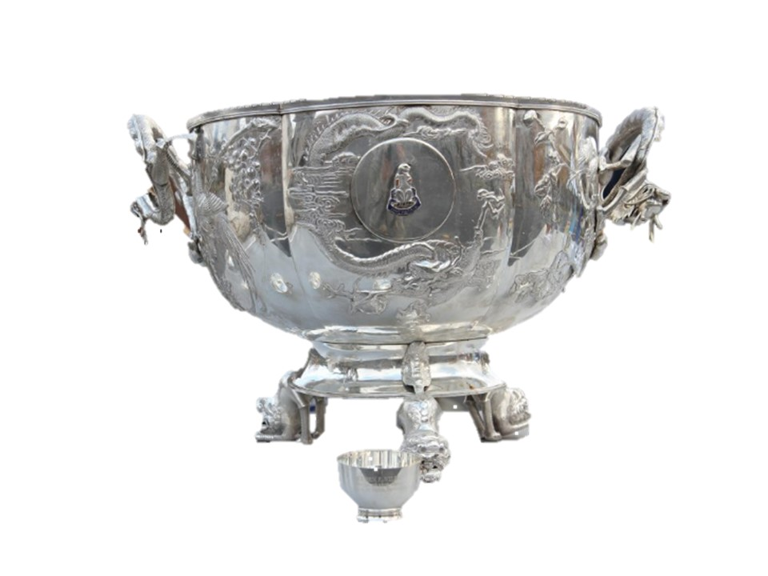
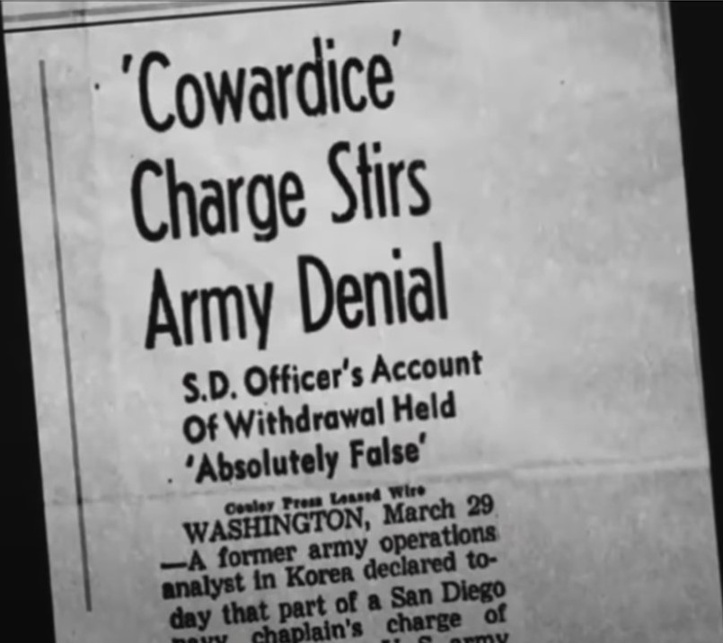

| Historian | Grady Smith: | 123-456-7890 | G.A.Smith@placeholder |
|---|
|
|
|

|
The late Karl H. Lowe, with help from James B. Simms and
Grady A. Smith, has passed down a century of military stories in
The 31st Infantry Regiment: A History of “America’s Foreign Legion”
in Peace and War (McFarland, 519 pp. $45, paper).
The three men were career soldiers who served in the 31st Infantry Regiment.
They know combat. As the unit’s Regimental Historian for twenty years, Karl Lowe recorded the 31st from its activation in the Philippines in 1916 through the Vietnam War. In this book James Simms expands on the unit’s action in Vietnam, and Grady Smith reports on activities in Iraq and Afghanistan. An excellent selection of photographs from archives and personal sources supplements their writing. Order your copy at the Quartermaster Store |
|
|
Changing of the Guard ceremony, Shanghai, China, 1938. Established in Manila, Phillipines, 13 August 1916,
the 31st Infantry Regiment, sometimes called
"America's Foriegn Legon" because it was not recalled from east Asia until the 1960s. At the link you
will find Patrick Feng's recounting of the histroy of the Regiment from 1913 to the present. armyhistroy.org is the website of The Army Historical Foundation, an organization dedicated to preserving the rich history of our United States Army. |
|  |
In 1942, as Japanese forces advanced on Corregidor, soldiers from the US Army’s
31st Infantry Regiment burned the regimental battle standards and buried a silver bowl
and cups. The bowl was a prized Army heirloom known as the Shanghai Bowl, and the
soldiers didn’t want it to fall into enemy hands. When the war was over, a contingent,
including one who helped bury the bowl, returned to Corregidor to retrieve it.
It took two months of digging, but they eventually unearthed it.
Today, the Shanghai Bowl remains a symbol of the heritage of the 31st Infantry Regiment
and is housed at Fort Drum, New York. A more complete history of the Shanghai Bowl is found at the link below: |
|
Regimental history are recorded at military-history.fandom.com. This website is for general military history,
but the link below will take you to the 31st Infantry Regiment page. |
|
|
Despite starvation, disease, no supplies, obsolete weapons, and often inoperative ammunition,
the peninsula's defenders fought the Japanese to a standstill for 4 months, upsetting Japan's
timetable for Asia's conquest. We’re the battling bastards of Bataan; No mama, no papa, no Uncle Sam. No aunts, no uncles, no cousins, no nieces, No pills, no planes, no artillery pieces. And nobody gives a damn. Nobody gives a damn. As a counterpoint, the British garrison of 80,000 British, Australian, New Zealanders, and Indian troops defending Singapore surrendered to a force of 30,000 Japanese troops after a battle lasting 7 days (8-15 February, 1942). This article covers the entire Regismental history. The quote above is from the "Battle of Bataan" section; the photo is from the cover of the American Rifleman magazine. |
|
Those Other Polar Bears! The 339th Regiment was created in June 1918,
composed mainly of young draftees,
for the purpose of fighting on the Western Front in France. Most of the 4,487 men
were from Michigan, but some 500 draftees from Wisconsin were included.
It was commonly referred to as "Detroit's Own". They were sent to fight the
Bolsheviks in Northern Russia.[1] Their Regiment's official 'nickname' is the "Polar Bear" (singular) because
of their inaugural service in West Siberia. A more complete history of the 339th Regiment is found at the link below: |
|
Colonel Allen MacLean and Lt. Colonel Don Carlos Faith.
Commanders of the 31st Regimental Combat Team,
tasked with protecting the left flank of Major General
Oliver P. Smith's First Marine Division at the
Chosen Reservoir. In the withdrawal of the United Nations forces under the onslaught of 300,000 soldiers of the People's Literation Army, the 31st Regimental Combat Team of about 3300 men, and supported by about 700 Republic of Korea Katusa soldiers, covered the Marine 1st Division's northeast flank for two weeks, holding two Chinese divisions (80th and elements of the 81st) numbering over 20,000 troops against advance. Out of ammunition and rations, when the surviors of the Regiment withdrew from their positions only 385 men remained who could continue the fight. Both Col. Allen and LTC Faith were KIA. LTC Faith received the Medal of Honor posthumously. 1,392 men of the 31st RCT were listed as MIA. |

|
Julie and her team championed the cause and a documentary was born.
The team gave heart and soul to this project. Julie was determined her
documentary would be the undeniable truth about Task Force Faith.
Her goal was not monetary but to educate a nation about these American
heroes. Julie’s documentary, "Task Force Faith:
The Story of the 31st Regimental Combat Team" was cleared for public
release in March 2014. |
|  |
This eight-part video is the detailed saga of Task Force MacLain/Faith including the
laying of blame on the commanders who earned it. The 31st Regimental Combat Team got a
"bad rap" that lasted for 50 years due to the misdescripton of their staunch determination
to hold the enemy at bay until, at last, the very means to continue the defense was
expended and the survivors had nothing left to fight with; they then exfiltrated the
battlefield having held about 20,000 Chinese seeking to encirle the 1st Marine divison
at bay for 5 days and nights, being decimated in the process. |
|
Episode 1
|
|
|
Episode 2
|
|
|
Episode 3
|
|
|
Episode 4
|
|
|
Episode 5
|
|
|
Episode 6
|
|
|
Episode 7
|
|
|
Episode 8
|
|
The Grunts and Co. is a four-part written account of the events leading up to, and actions during, the battle on
the east side of the Chosin Reservoir. The nom-de-guerre of the author is Yankee Papa; in Part 1 Yankee Papa
covers the political events that led the North Koreans to invade the South.
|
|

|
General Douglas MacArthur's brilliant surprise amphibious assault caused the switft collapse of the North Korean
invading force. However, there was a lack of vision as to what should have been done in the event of
such success. This led to ad hoc plans made "on the fly" without sufficient strategic analysis
led to tactical disaster. Leadership at every level from Washington D. C. to the Corps level failed
their soldiers, leading to a desparte withdrawal. |

|
It seems that every generation of leadership must learn anew the lesson of not under-estimating the
capabilites and determination of the enemy. You would have thought that Douglas MacArthur, of all
people, would have appreciated the fighting skills of oriental soldiers. |

|
During the final phase of the battle, with medial supplies, ammunition, rations in short supply, and
many of the leadership having become KIA, the remnants of the Regiment lost cohesion and individually
infiltrated to the frozen lake and made toward the Marine position on the west side of the reservoir.
Of the initial RCT strength of 3300 men including 700 Korean KATUSA soldiers, 385 members were able
to continue the fight. The Regiment had held a reinforced Chinese division at bay for xxxx days,
after which 1,392 men were MIA. LTC Faith received the Medal of Honor posthumorously. His remains were
found decades later; he has been interred at Arlington Cemetery since 2008???
|
|
Pork Chop Hill is a 1959 American Korean War film starring Gregory Peck,
Woody Strode, Rip Torn, and George Peppard. The film, which was the final
war film directed by Lewis Milestone, is based upon the book by U.S.
military historian Brigadier General S. L. A. Marshall. It depicts the
first fierce Battle of Pork Chop Hill between the U.S. Army's 7th
Infantry Division and Chinese and North Korean forces in April 1953.
The film features numerous actors who would go on to become movie and television stars in the 1960s and the 1970s such as Woody Strode, Harry Guardino, Robert Blake, George Peppard, Norman Fell, Abel Fernandez, Gavin MacLeod, Harry Dean Stanton, and Clarence Williams III. It is also the screen debut of Martin Landau and George Shibata, who was a West Point classmate of Lieutenant Joe Clemons, who also acted as technical adviser on the film. |
|
Bataan is a 1943 American black-and-white World War II film drama from Metro-Goldwyn-Mayer,
produced by Irving Starr (with Dore Schary as executive producer), directed by Tay Garnett,
that stars Robert Taylor, George Murphy, Lloyd Nolan, Thomas Mitchell, Desi Arnaz and
Robert Walker. It follows the fates of a group of men charged with destroying a bridge
during the doomed defense of the Bataan Peninsula by American forces in the Philippines
against the invading Japanese.
|